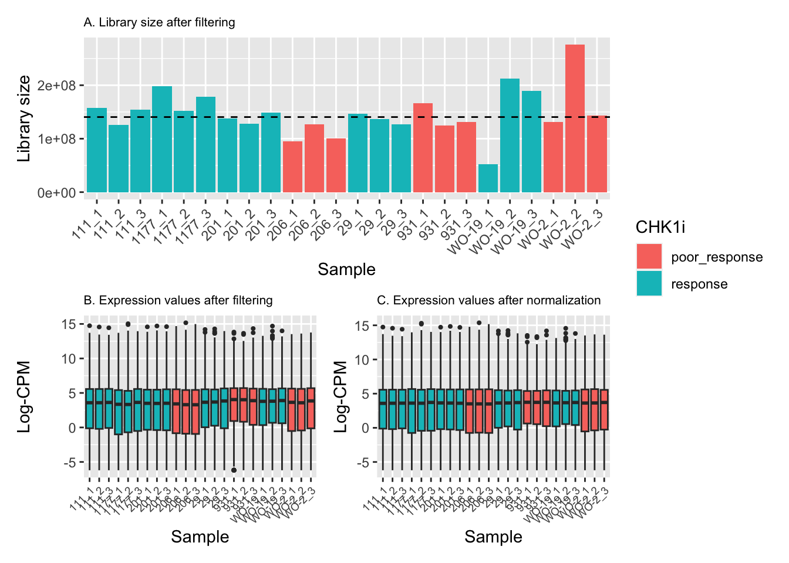

limma_analysis
Sally Beard
2023-11-21
Last updated: 2023-11-22
Checks: 7 0
Knit directory: pdx_rnaseq/
This reproducible R Markdown analysis was created with workflowr (version 1.7.1). The Checks tab describes the reproducibility checks that were applied when the results were created. The Past versions tab lists the development history.
Great! Since the R Markdown file has been committed to the Git repository, you know the exact version of the code that produced these results.
Great job! The global environment was empty. Objects defined in the global environment can affect the analysis in your R Markdown file in unknown ways. For reproduciblity it’s best to always run the code in an empty environment.
The command set.seed(20231121) was run prior to running
the code in the R Markdown file. Setting a seed ensures that any results
that rely on randomness, e.g. subsampling or permutations, are
reproducible.
Great job! Recording the operating system, R version, and package versions is critical for reproducibility.
Nice! There were no cached chunks for this analysis, so you can be confident that you successfully produced the results during this run.
Great job! Using relative paths to the files within your workflowr project makes it easier to run your code on other machines.
Great! You are using Git for version control. Tracking code development and connecting the code version to the results is critical for reproducibility.
The results in this page were generated with repository version 99eab40. See the Past versions tab to see a history of the changes made to the R Markdown and HTML files.
Note that you need to be careful to ensure that all relevant files for
the analysis have been committed to Git prior to generating the results
(you can use wflow_publish or
wflow_git_commit). workflowr only checks the R Markdown
file, but you know if there are other scripts or data files that it
depends on. Below is the status of the Git repository when the results
were generated:
Ignored files:
Ignored: .DS_Store
Ignored: .RData
Ignored: .Rhistory
Ignored: analysis/.DS_Store
Ignored: data/.DS_Store
Untracked files:
Untracked: README.html
Untracked: analysis/MDS_plot.jpeg
Untracked: analysis/MDS_plot.tiff
Untracked: analysis/heatmap.jpeg
Untracked: data/counts/
Untracked: glimma-plots/
Unstaged changes:
Modified: README.md
Note that any generated files, e.g. HTML, png, CSS, etc., are not included in this status report because it is ok for generated content to have uncommitted changes.
These are the previous versions of the repository in which changes were
made to the R Markdown (analysis/limma_analysis.Rmd) and
HTML (docs/limma_analysis.html) files. If you’ve configured
a remote Git repository (see ?wflow_git_remote), click on
the hyperlinks in the table below to view the files as they were in that
past version.
| File | Version | Author | Date | Message |
|---|---|---|---|---|
| Rmd | 99eab40 | Sally Beard | 2023-11-22 | Add analysis |
The sequencing data used in the following study was generated at AGRF using an Illumina stranded mRNA library prep. RNA was collected from PDX tumours from three mice each for eight different PDX tumours, resulting in 24 samples. Samples were sequenced on the Novaseq 6000 platform to generate 150bp PE end reads. All samples were sequenced across three lanes.
Sequence quality was assessed by fastqc and was found to
be high for all samples. Reads were mapped to GRch38 Ensembl release 110
with hisat2 (v2.2.1) and reads aligning with genes were
quantified using HTseq (v3.0.3).
# Import required libraries
library(here)
library(limma)
library(edgeR)
library(tidyverse)
library(RColorBrewer)
library(Homo.sapiens)
library(patchwork)
library(knitr)
library(kableExtra)
library(ggrepel)
library(gplots)
library(Glimma)
library(ggplot2)
library(tibble)
library(glue)
library(cowplot)
library(ggforce)Data Import
Set up DGElist object for downstream analysis and add
sample-specific information and gene annotations.
# List count files from working directory
files <- list.files("./data/counts/", pattern = "_sorted\\.reverse_counts$")
# edgeR has a function readDGE for combining separate count files into one matrix of counts in one step
counts <- readDGE(files, path = "./data/counts/", columns = c(1,2), header = FALSE)
# Remove meta tags as library size includes counts from the meta tags
MetaTags <- grep("^__", rownames(counts))
counts <- counts[-MetaTags, ]
# Update library size to reflect mapped reads
counts$samples$lib.size <- colSums(counts$counts)
# Obtain sample names from file names
sample <- strsplit2(files, "_")[,1:3]
sample_names <- apply(sample, 1, function(row) paste(row, collapse = "_"))
counts$samples$mouse <- sample[,2]
counts$samples$pdx <- sample[,1]
replicates <- rep(c(1,1,1,2,2,2,3,3,3), times = 8)
counts$samples$replicates <- replicates
sample_name <- paste(counts$samples$pdx, counts$samples$replicates, sep = "_")
counts$samples$sample <- sample_name
# Add sample-level information related to experimental design (and possible confounding factors) to the count matrix
counts$samples$lane <- as.factor(strsplit2(files, "_")[,6])
counts$samples$pdx <- as.factor(sample[,1])
# Import information for each gene
geneid <- rownames(counts)
ensembl_ids <- sub("\\..*", "", geneid)
genes <- select(Homo.sapiens, keys=ensembl_ids, columns=c("SYMBOL", "TXCHROM", "ENTREZID"),
keytype="ENSEMBL")
genes <- genes[!duplicated(genes$ENSEMBL),]
counts$genes <- genes
# Remove genes without ENTREZ IDs
keep <- !is.na(counts$genes$ENTREZID) & !is.null(counts$genes$ENTREZID)
counts <- counts[keep, ]The MDS plots below show that there is no batch effect from sequencing lane, so technical replicates run across the three lanes were summed together.
# Make MDS plots to assess technical replicate
lcpm <- cpm(counts, log=TRUE)
col.pdx <- counts$samples$pdx
levels(col.pdx) <- brewer.pal(nlevels(col.pdx), "Set1")
col.pdx <- as.character(col.pdx)
col.lane <- counts$samples$lane
levels(col.lane) <- brewer.pal(nlevels(col.lane), "Set2")
col.lane <- as.character(col.lane)
plotMDS(lcpm, labels=counts$samples$sample, col=col.pdx)
title(main="A. Sample groups")plotMDS(lcpm, labels=counts$samples$lane, col=col.lane)
title(main="B. Sequencing lanes")# Sum counts from technical replicates
samplenames <- counts$samples$sample
counts <- sumTechReps(counts, ID=samplenames)# Add additional sample level information
elements <- c("response", "poor_response", "response", "poor_response", "response", "poor_response")
repeated_elements <- rep(elements, times = c(9,3,3,3,3,3))
group <- list(elements = repeated_elements)
counts$samples$group <- group$elements
elements <- c("1", "2")
repeated_elements <- rep(elements, times = c(18, 6))
site <- list(elements = repeated_elements)
counts$samples$site <- site$elements
elements <- c("HGSOC", "OCS","HGSOC")
repeated_elements <- rep(elements, times = c(3,3,18))
pathology <- list(elements = repeated_elements)
counts$samples$pathology <- pathology$elements
elements <- c("ovarian_tumour", "omental_tumour", "biopsy", "ovarian_tumour", "omental_tumour", "ovarian_tumour", "omental_tumour")
repeated_elements <- rep(elements, times = c(6,3,3,3,3,3,3))
specimen <- list(elements = repeated_elements)
counts$samples$specimen <- specimen$elements
elements <- c("refractory", "sensitive", "refractory", "resistant", "sensitive")
repeated_elements <- rep(elements, times = c(9,3,6,3,3))
platinum <- list(elements = repeated_elements)
counts$samples$platinum <- platinum$elements
replicates <- rep(1:3, times = 8)
counts$samples$replicates <- replicates
sample <- paste(counts$samples$pdx, counts$samples$replicates, sep = "_")
counts$samples$sample <- sample
# Generate library statistics
cpm <- cpm(counts)
lcpm <- cpm(counts, log=TRUE)
L <- mean(counts$samples$lib.size) * 1e-6
M <- median(counts$samples$lib.size) * 1e-6Quality Control
Genes with no or low counts are unlikely to be biologically
important, they provide little evidence for differential expression, and
interfere with statistical approximations, so they were filtered out
before performing the analysis. Genes with low or no counts (counts per
million reads that corresponded to less than ~10 reads in any 9 samples
(smallest group size)) were filtered out of the analysis, based on the
recommendations in the edgeR documentation.
# Filter out genes with low expression
keep.exprs <- filterByExpr(counts, group=counts$samples$group)
table(keep.exprs)keep.exprs
FALSE TRUE
18144 18314 counts_filtered <- counts[keep.exprs,, keep.lib.sizes=FALSE]
samplenames <- colnames(counts_filtered)Plotting the distribution of log-CPM values (below) showed that before filtering (A) many genes in each sample had low or no expression, with negative log-CPM values. These genes were removed from the analysis after filtering (B).
# Make density plots for counts before and after filtering out genes with low expression
par(mfrow = c(1,1))
lcpmz <- lcpm
lcpm.cutoff <- log2(10/M + 2/L)
nsamples <- ncol(counts)
col <- scales::hue_pal()(nsamples)
plot(density(lcpm[,1]), col=col[1], lwd=2, ylim=c(0,0.4), las=2, main="", xlab="")
title(main="A. Raw data", xlab="Log-cpm")
abline(v=lcpm.cutoff, lty=3)
for (i in 2:nsamples){
den <- density(lcpm[,i])
lines(den$x, den$y, col=col[i], lwd=2)
}lcpm2 <- cpm(counts_filtered, log=TRUE)
plot(density(lcpm2[,1]), col=col[1], lwd=2, ylim=c(0,0.4), las=2, main="", xlab="")
title(main="B. Filtered data", xlab="Log-cpm")
abline(v=lcpm.cutoff, lty=3)
for (i in 2:nsamples){
den <- density(lcpm2[,i])
lines(den$x, den$y, col=col[i], lwd=2)
}TMM normalisation was applied to account for any highly expressed genes monopolising the sequencing and to account for the underlying differences in the distributions of expressed genes between samples.
# Apply TMM normalisation
norm_counts <- calcNormFactors(counts_filtered, method = "TMM")Effective library sizes varied from around 50 million reads to more than 250 million reads, with the median just under 150 million reads (A). The range and distribution of expression values looked fairly uniform between samples, and TMM normalisation further improved this.
dat <- data.frame(lib = norm_counts$samples$lib.size,
status = norm_counts$samples$group,
sample = colnames(norm_counts))
p1 <- ggplot(dat, aes(x = sample, y = lib, fill = status)) +
geom_bar(stat = "identity") +
theme(axis.text.x = element_text(angle = 45, hjust = 1)) +
labs(x = "Sample", y = "Library size",
fill = "CHK1i", title = "A. Library size after filtering") +
geom_hline(yintercept = median(dat$lib), linetype = "dashed") +
scale_x_discrete(limits = dat$sample)
dat <- reshape2::melt(cpm(norm_counts, normalized.lib.sizes = FALSE, log = TRUE),
value.name = "cpm")
dat$status <- rep(norm_counts$samples$group, each = nrow(norm_counts))
colnames(dat)[2] <- "sample"
p2 <- ggplot(dat, aes(x = sample, y = cpm, fill = status)) +
geom_boxplot(show.legend = FALSE, outlier.size = 0.75) +
theme(axis.text.x = element_text(angle = 45, hjust = 1, size = 7)) +
labs(x = "Sample", y = "Log-CPM",
fill = "CHK1i treatment", title = "B. Expression values after filtering") +
geom_hline(yintercept = median(dat$lib), linetype = "dashed")
dat <- reshape2::melt(cpm(norm_counts, normalized.lib.sizes = TRUE, log = TRUE),
value.name = "cpm")
dat$status <- rep(norm_counts$samples$group, each = nrow(norm_counts))
colnames(dat)[2] <- "sample"
p3 <- ggplot(dat, aes(x = sample, y = cpm, fill = status)) +
geom_boxplot(show.legend = FALSE, outlier.size = 0.75) +
theme(axis.text.x = element_text(angle = 45, hjust = 1, size = 7)) +
labs(x = "Sample", y = "Log-CPM",
fill = "CHK1i treatment", title = "C. Expression values after normalisation") +
geom_hline(yintercept = median(dat$lib), linetype = "dashed")
p1 / (p2 + p3) + plot_layout(guides = "collect")
Multi-dimensional scaling (MDS) plots show the largest sources of variation in the data. They are a good way of identifying structure in the data and exploring relationships between samples. The following plots examine the first dimensions coloured for known features of the data. The samples do not cluster in any of the first dimensions based on their CHK1i responder status, suggesting that this is not the largest source of variation in the data. Sample 1177 is an outlier in the first dimension, which is confounded with it being the only OCS sample. Sample 206 also appears like it may be an outlier in dimension 2, this may correspond to it being the only biopsy specimen. The remaining samples cluster reasonably closely together, except for WO-2, which is a bit closer to 206 in the first and second dimensions, which may reflect that these are the only two platinum sensitive pdx models. Overall, the large amount of variation in the first dimension suggests that there might be tumour specific differences in expression driving the variation.
dims <- list(c(1,2), c(1,3), c(2,3), c(3,4))
vars <- c("group", "pdx", "site", "pathology", "specimen", "platinum")
patches <- vector("list", length(vars))
for(i in 1:length(vars)){
p <- vector("list", length(dims))
for(j in 1:length(dims)){
mds <- plotMDS(cpm(norm_counts, log = TRUE), top = 1000, gene.selection="common",
plot = FALSE, dim.plot = dims[[j]])
dat <- tibble::tibble(x = mds$x, y = mds$y,
sample = norm_counts$samples$sample,
variable = pull(norm_counts$samples, vars[i]))
p[[j]] <- ggplot(dat, aes(x = x, y = y, colour = variable)) +
geom_text(aes(label = sample), size = 2.5) +
labs(x = glue::glue("Leading logFC dim {dims[[j]][1]}"),
y = glue::glue("Leading logFC dim {dims[[j]][2]}"),
colour = vars[i])
}
patches[[i]] <- wrap_elements(wrap_plots(p, ncol = 2, guides = "collect") +
plot_annotation(title = glue::glue("Coloured by: {vars[i]}")) &
theme(legend.position = "bottom"))
}
patches[[1]]
[[2]]
[[3]]
[[4]]
[[5]]
[[6]]# Create MDS plot for supplementary figure
dims <- list(c(1, 2), c(1, 3), c(2, 3), c(3, 4))
# Create a list to store the MDS plots
mds_plots <- list()
for (i in 1:length(dims)) {
mds <- plotMDS(cpm(norm_counts, log = TRUE), top = 1000, gene.selection = "common",
plot = FALSE, dim.plot = dims[[i]])
dat <- tibble::tibble(x = mds$x, y = mds$y,
pdx = pull(norm_counts$samples, "pdx"),
group = pull(norm_counts$samples, "group"),
pathology = pull(norm_counts$samples, "pathology"))
p <- ggplot(dat, aes(x = x, y = y)) +
geom_point(aes(color = pdx, shape = group, fill = pathology), size = 3) +
scale_shape_manual(values = c("response" = 16, "poor_response" = 17)) +
labs(x = glue::glue("Leading logFC dim {dims[[i]][1]}"),
y = glue::glue("Leading logFC dim {dims[[i]][2]}")) +
theme(legend.position = "none") # Remove individual legends
# Add a circle around points with pathology "OCS" using ggforce
p <- p + geom_circle(data = filter(dat, pathology == "OCS"),
aes(x0 = x, y0 = y, r = 0.2),
color = "grey", fill = NA, size = 1)
mds_plots[[i]] <- p
}
# Combine the MDS plots into a single plot
mds_arranged <- plot_grid(
plot_grid(mds_plots[[1]], mds_plots[[2]], ncol = 2) + theme(legend.position = "none"),
plot_grid(mds_plots[[3]], mds_plots[[4]], ncol = 2) + theme(legend.position = "none"),
nrow = 2
)
# Display the arranged MDS plots
print(mds_arranged)Differential expression analysis
In the following analysis, a test is set up to compare responders with non-responders, excluding outlier sample 1177. A means model was fitted where the model parameters represent the means of each pdx model, and responsive models were compared to non-responsive models by testing the difference between the parameter estimates in each group.
# Set up design matrix with parameter for each pdx model
pdx <- as.factor(norm_counts$samples$pdx)
design1 <- model.matrix(~0 + pdx)
colnames(design1) <- gsub("group", "", colnames(design1))
new_names <- c("pdxWO_19", "pdxWO_2")
old_names <- c("pdxWO-19", "pdxWO-2")
for (i in 1:length(old_names)) {
colnames(design1)[colnames(design1) == old_names[i]] <- new_names[i]
}
rownames(design1) <- samplenames
# Set up contrast to test responsive versus non-responsive models
contrast <- makeContrasts(
resp.v.nonresp = (pdx29+pdx111+pdx201+pdxWO_19)/4-(pdx206+pdx931+pdxWO_2)/3,
levels=colnames(design1))Apply linear modelling using the limma function, which
uses the log-CPM values which are assumed to be normally distributed,
with precision-weights calculated by the voom function for
the mean-variance relationship. Number of significant genes listed below
in table 1.
# Apply voom function to the normalised counts
par(mfrow=c(1,2))
v <- voom(norm_counts, design1, plot=TRUE)
# Fit linear model and apply contrast for test
vfit <- lmFit(v, design1)
vfit.cont <- contrasts.fit(vfit, contrasts=contrast)
efit <- eBayes(vfit.cont)
plotSA(efit, main="Final model: Mean-variance trend")
# Find number of differentially expressed genes
kable_styling(kable(summary(decideTests(efit)), caption="Table 1: Number of differentially expressed genes"))| resp.v.nonresp | |
|---|---|
| Down | 4175 |
| NotSig | 9173 |
| Up | 4966 |
Since the number of differentially expressed genes was very high, the
treat method was applied to set a fold change cutoff of
0.5, which reduced the number of significant genes to a more manageable
number. Table 2 shows the number of significantly differentially
expressed genes after applying the fold change cut off and running each
of the tests. Table 3 shows the top 20 DE genes for responder vs poor
responder test.
# Apply log fold change cutoff to find significant genes
tfit <- treat(vfit.cont, lfc=0.5)
# Make table with number of DEGs for each test
dt <- decideTests(tfit)
kable_styling(kable(summary(dt, caption="Table 2: Number of differentially expressed genes from treat method")))| resp.v.nonresp | |
|---|---|
| Down | 1505 |
| NotSig | 14898 |
| Up | 1911 |
# Make table with top DEGs for each test
top_treat_resp.v.nonresp <- data.frame(topTreat(tfit, n=20, sort.by = "P"))
kable_styling(kable(top_treat_resp.v.nonresp[,c(3,5,6,9)], caption="Table 3: DE genes in responsive pdx versus poor responders", digits = 20))| SYMBOL | logFC | AveExpr | adj.P.Val | |
|---|---|---|---|---|
| ENSG00000157954.15 | WIPI2 | 4.486325 | 4.7979026 | 3.098845e-12 |
| ENSG00000227827.3 | PKD1P2 | -2.971579 | 2.4138203 | 5.377192e-11 |
| ENSG00000247516.8 | MIR4458HG | 6.310135 | 0.9026952 | 6.914640e-11 |
| ENSG00000242802.9 | AP5Z1 | 4.221873 | 3.4185210 | 4.670573e-10 |
| ENSG00000265933.5 | LINC00668 | 7.824832 | -1.6367033 | 4.670573e-10 |
| ENSG00000256229.8 | ZNF486 | -6.957183 | -1.4707623 | 4.939533e-10 |
| ENSG00000146587.18 | RBAK | 4.084453 | 3.1692840 | 4.970848e-10 |
| ENSG00000172465.14 | TCEAL1 | 3.514373 | 1.2064940 | 4.970848e-10 |
| ENSG00000147246.10 | HTR2C | 6.420638 | -1.3074195 | 1.200918e-09 |
| ENSG00000266729.5 | DSG1-AS1 | 6.235451 | -4.5682199 | 1.200918e-09 |
| ENSG00000214652.6 | ZNF727 | 7.269333 | -0.1039279 | 1.200918e-09 |
| ENSG00000254681.7 | PKD1P5 | -2.126198 | 3.2688327 | 1.423881e-09 |
| ENSG00000105171.10 | POP4 | 2.084162 | 6.7024602 | 1.499018e-09 |
| ENSG00000107165.13 | TYRP1 | 7.279802 | -0.8700701 | 1.935851e-09 |
| ENSG00000104870.13 | FCGRT | 4.816698 | 4.7487712 | 2.221262e-09 |
| ENSG00000171889.7 | MIR31HG | -5.954429 | -2.2989996 | 2.221262e-09 |
| ENSG00000147475.17 | ERLIN2 | 2.028277 | 5.9374255 | 2.221262e-09 |
| ENSG00000189067.14 | LITAF | -2.516439 | 6.4708330 | 2.356192e-09 |
| ENSG00000106536.21 | POU6F2 | 6.185343 | -1.9000557 | 2.711042e-09 |
| ENSG00000131943.20 | C19orf12 | 1.801995 | 6.2736091 | 2.711042e-09 |
To look at the levels of gene expression in individual samples the
GlMDPlot function was used. This creates a two-panel
interactive MD plot in an html. The left plot shows the log-fold-change
vs average expression with up regulated genes coloured red and down
regulated genes coloured blue. The right plot shows the expression
levels of a particular gene in each sample, grouped by pdx model.
Hovering over points on left plot will plot expression level for the
corresponding gene, clicking on points will fix the expression plot to
gene. Clicking on a row in the table has the same effect as clicking on
the corresponding gene in the plot. The values in the table correspond
to the test of responders versus non-responders excluding outlier pdx
1177 samples.
lcpm <- cpm(norm_counts, log=TRUE)
glMDPlot(tfit, coef = 1, counts = lcpm, status=dt, main="MD plot: Responders versus poor responders", groups=pdx)Click here to see interactive MD plot
Investigating the top genes shows that many of the genes called as differentially expressed are actually being driven by just one PDX model, and not reflective of the difference between responders and poor responders.
Below is a basic heatmap made using the expression of the top 200 genes. As expected from the PCA plots and visualisations, pdx 206 is behaving very differently to the other samples for a subset of genes. Also sample 931 clusters with the responders rather than the non-responders.
# Specify color palette from RColorBrewer
my_palette <- colorRampPalette(brewer.pal(9, "RdBu"))(100)
group_colours <- c("response" = brewer.pal(8, "Set2")[1], # Green
"poor_response" = brewer.pal(8, "Set2")[4]) # Pink
# Create a legend
legend_labels <- unique(unlist(group))
legend_colours <- group_colours[legend_labels]
legend_text <- c("Responders", "Poor responders")
# Make heatmap using heatmap.2
dge <- data.frame(topTreat(tfit, n=Inf, sort.by = "P"))
lcpm2 <- lcpm[, -c(4:6)]
responsive.v.non <- dge$ENSEMBL[1:200]
i <- which(norm_counts$genes$ENSEMBL %in% responsive.v.non)
heatmap.2(lcpm2[i,], scale="row",
labRow=norm_counts$genes$SYMBOL[i], labCol=colnames(lcpm2),
col=my_palette, trace="none", density.info="none",
margin=c(8,6), lhei=c(2,10), dendrogram="column", key.title = "Expression Levels",
ColSideColors = group_colours[unlist(group)[4:24]],
cexCol = 1.8)
# Add the legend to the plot
legend("left", legend = legend_text, fill = legend_colours, title = "Sample Groups")sessionInfo()R version 4.2.2 (2022-10-31)
Platform: aarch64-apple-darwin20 (64-bit)
Running under: macOS Monterey 12.5.1
Matrix products: default
BLAS: /Library/Frameworks/R.framework/Versions/4.2-arm64/Resources/lib/libRblas.0.dylib
LAPACK: /Library/Frameworks/R.framework/Versions/4.2-arm64/Resources/lib/libRlapack.dylib
locale:
[1] en_US.UTF-8/en_US.UTF-8/en_US.UTF-8/C/en_US.UTF-8/en_US.UTF-8
attached base packages:
[1] stats4 stats graphics grDevices utils datasets methods
[8] base
other attached packages:
[1] ggforce_0.4.1
[2] cowplot_1.1.1
[3] glue_1.6.2
[4] Glimma_2.8.0
[5] gplots_3.1.3
[6] ggrepel_0.9.4
[7] kableExtra_1.3.4
[8] knitr_1.44
[9] patchwork_1.1.3
[10] Homo.sapiens_1.3.1
[11] TxDb.Hsapiens.UCSC.hg19.knownGene_3.2.2
[12] org.Hs.eg.db_3.16.0
[13] GO.db_3.16.0
[14] OrganismDbi_1.40.0
[15] GenomicFeatures_1.50.4
[16] GenomicRanges_1.50.2
[17] GenomeInfoDb_1.34.9
[18] AnnotationDbi_1.60.2
[19] IRanges_2.32.0
[20] S4Vectors_0.36.2
[21] Biobase_2.58.0
[22] BiocGenerics_0.44.0
[23] RColorBrewer_1.1-3
[24] lubridate_1.9.3
[25] forcats_1.0.0
[26] stringr_1.5.0
[27] dplyr_1.1.3
[28] purrr_1.0.2
[29] readr_2.1.4
[30] tidyr_1.3.0
[31] tibble_3.2.1
[32] ggplot2_3.4.4
[33] tidyverse_2.0.0
[34] edgeR_3.40.2
[35] limma_3.54.2
[36] here_1.0.1
[37] workflowr_1.7.1
loaded via a namespace (and not attached):
[1] BiocFileCache_2.6.1 systemfonts_1.0.5
[3] plyr_1.8.9 BiocParallel_1.32.6
[5] digest_0.6.33 htmltools_0.5.6.1
[7] fansi_1.0.5 magrittr_2.0.3
[9] memoise_2.0.1 tzdb_0.4.0
[11] annotate_1.76.0 Biostrings_2.66.0
[13] matrixStats_1.0.0 svglite_2.1.2
[15] timechange_0.2.0 prettyunits_1.2.0
[17] colorspace_2.1-0 blob_1.2.4
[19] rvest_1.0.3 rappdirs_0.3.3
[21] xfun_0.40 callr_3.7.3
[23] crayon_1.5.2 RCurl_1.98-1.12
[25] jsonlite_1.8.7 graph_1.76.0
[27] polyclip_1.10-6 gtable_0.3.4
[29] zlibbioc_1.44.0 XVector_0.38.0
[31] webshot_0.5.5 DelayedArray_0.24.0
[33] scales_1.2.1 DBI_1.1.3
[35] Rcpp_1.0.11 xtable_1.8-4
[37] viridisLite_0.4.2 progress_1.2.2
[39] bit_4.0.5 htmlwidgets_1.6.2
[41] httr_1.4.7 farver_2.1.1
[43] pkgconfig_2.0.3 XML_3.99-0.14
[45] sass_0.4.7 dbplyr_2.4.0
[47] locfit_1.5-9.8 utf8_1.2.4
[49] labeling_0.4.3 reshape2_1.4.4
[51] tidyselect_1.2.0 rlang_1.1.1
[53] later_1.3.1 munsell_0.5.0
[55] tools_4.2.2 cachem_1.0.8
[57] cli_3.6.1 generics_0.1.3
[59] RSQLite_2.3.2 evaluate_0.22
[61] fastmap_1.1.1 yaml_2.3.7
[63] processx_3.8.2 bit64_4.0.5
[65] fs_1.6.3 caTools_1.18.2
[67] KEGGREST_1.38.0 RBGL_1.74.0
[69] whisker_0.4.1 xml2_1.3.5
[71] biomaRt_2.54.1 compiler_4.2.2
[73] rstudioapi_0.15.0 filelock_1.0.2
[75] curl_5.1.0 png_0.1-8
[77] tweenr_2.0.2 geneplotter_1.76.0
[79] bslib_0.5.1 stringi_1.7.12
[81] highr_0.10 ps_1.7.5
[83] lattice_0.22-5 Matrix_1.6-1.1
[85] vctrs_0.6.4 pillar_1.9.0
[87] lifecycle_1.0.3 BiocManager_1.30.22
[89] jquerylib_0.1.4 bitops_1.0-7
[91] httpuv_1.6.12 rtracklayer_1.58.0
[93] R6_2.5.1 BiocIO_1.8.0
[95] promises_1.2.1 KernSmooth_2.23-22
[97] codetools_0.2-19 MASS_7.3-60
[99] gtools_3.9.4 SummarizedExperiment_1.28.0
[101] DESeq2_1.38.3 rprojroot_2.0.3
[103] rjson_0.2.21 withr_2.5.1
[105] GenomicAlignments_1.34.1 Rsamtools_2.14.0
[107] GenomeInfoDbData_1.2.9 parallel_4.2.2
[109] hms_1.1.3 grid_4.2.2
[111] rmarkdown_2.25 MatrixGenerics_1.10.0
[113] git2r_0.32.0 getPass_0.2-2
[115] restfulr_0.0.15
sessionInfo()R version 4.2.2 (2022-10-31)
Platform: aarch64-apple-darwin20 (64-bit)
Running under: macOS Monterey 12.5.1
Matrix products: default
BLAS: /Library/Frameworks/R.framework/Versions/4.2-arm64/Resources/lib/libRblas.0.dylib
LAPACK: /Library/Frameworks/R.framework/Versions/4.2-arm64/Resources/lib/libRlapack.dylib
locale:
[1] en_US.UTF-8/en_US.UTF-8/en_US.UTF-8/C/en_US.UTF-8/en_US.UTF-8
attached base packages:
[1] stats4 stats graphics grDevices utils datasets methods
[8] base
other attached packages:
[1] ggforce_0.4.1
[2] cowplot_1.1.1
[3] glue_1.6.2
[4] Glimma_2.8.0
[5] gplots_3.1.3
[6] ggrepel_0.9.4
[7] kableExtra_1.3.4
[8] knitr_1.44
[9] patchwork_1.1.3
[10] Homo.sapiens_1.3.1
[11] TxDb.Hsapiens.UCSC.hg19.knownGene_3.2.2
[12] org.Hs.eg.db_3.16.0
[13] GO.db_3.16.0
[14] OrganismDbi_1.40.0
[15] GenomicFeatures_1.50.4
[16] GenomicRanges_1.50.2
[17] GenomeInfoDb_1.34.9
[18] AnnotationDbi_1.60.2
[19] IRanges_2.32.0
[20] S4Vectors_0.36.2
[21] Biobase_2.58.0
[22] BiocGenerics_0.44.0
[23] RColorBrewer_1.1-3
[24] lubridate_1.9.3
[25] forcats_1.0.0
[26] stringr_1.5.0
[27] dplyr_1.1.3
[28] purrr_1.0.2
[29] readr_2.1.4
[30] tidyr_1.3.0
[31] tibble_3.2.1
[32] ggplot2_3.4.4
[33] tidyverse_2.0.0
[34] edgeR_3.40.2
[35] limma_3.54.2
[36] here_1.0.1
[37] workflowr_1.7.1
loaded via a namespace (and not attached):
[1] BiocFileCache_2.6.1 systemfonts_1.0.5
[3] plyr_1.8.9 BiocParallel_1.32.6
[5] digest_0.6.33 htmltools_0.5.6.1
[7] fansi_1.0.5 magrittr_2.0.3
[9] memoise_2.0.1 tzdb_0.4.0
[11] annotate_1.76.0 Biostrings_2.66.0
[13] matrixStats_1.0.0 svglite_2.1.2
[15] timechange_0.2.0 prettyunits_1.2.0
[17] colorspace_2.1-0 blob_1.2.4
[19] rvest_1.0.3 rappdirs_0.3.3
[21] xfun_0.40 callr_3.7.3
[23] crayon_1.5.2 RCurl_1.98-1.12
[25] jsonlite_1.8.7 graph_1.76.0
[27] polyclip_1.10-6 gtable_0.3.4
[29] zlibbioc_1.44.0 XVector_0.38.0
[31] webshot_0.5.5 DelayedArray_0.24.0
[33] scales_1.2.1 DBI_1.1.3
[35] Rcpp_1.0.11 xtable_1.8-4
[37] viridisLite_0.4.2 progress_1.2.2
[39] bit_4.0.5 htmlwidgets_1.6.2
[41] httr_1.4.7 farver_2.1.1
[43] pkgconfig_2.0.3 XML_3.99-0.14
[45] sass_0.4.7 dbplyr_2.4.0
[47] locfit_1.5-9.8 utf8_1.2.4
[49] labeling_0.4.3 reshape2_1.4.4
[51] tidyselect_1.2.0 rlang_1.1.1
[53] later_1.3.1 munsell_0.5.0
[55] tools_4.2.2 cachem_1.0.8
[57] cli_3.6.1 generics_0.1.3
[59] RSQLite_2.3.2 evaluate_0.22
[61] fastmap_1.1.1 yaml_2.3.7
[63] processx_3.8.2 bit64_4.0.5
[65] fs_1.6.3 caTools_1.18.2
[67] KEGGREST_1.38.0 RBGL_1.74.0
[69] whisker_0.4.1 xml2_1.3.5
[71] biomaRt_2.54.1 compiler_4.2.2
[73] rstudioapi_0.15.0 filelock_1.0.2
[75] curl_5.1.0 png_0.1-8
[77] tweenr_2.0.2 geneplotter_1.76.0
[79] bslib_0.5.1 stringi_1.7.12
[81] highr_0.10 ps_1.7.5
[83] lattice_0.22-5 Matrix_1.6-1.1
[85] vctrs_0.6.4 pillar_1.9.0
[87] lifecycle_1.0.3 BiocManager_1.30.22
[89] jquerylib_0.1.4 bitops_1.0-7
[91] httpuv_1.6.12 rtracklayer_1.58.0
[93] R6_2.5.1 BiocIO_1.8.0
[95] promises_1.2.1 KernSmooth_2.23-22
[97] codetools_0.2-19 MASS_7.3-60
[99] gtools_3.9.4 SummarizedExperiment_1.28.0
[101] DESeq2_1.38.3 rprojroot_2.0.3
[103] rjson_0.2.21 withr_2.5.1
[105] GenomicAlignments_1.34.1 Rsamtools_2.14.0
[107] GenomeInfoDbData_1.2.9 parallel_4.2.2
[109] hms_1.1.3 grid_4.2.2
[111] rmarkdown_2.25 MatrixGenerics_1.10.0
[113] git2r_0.32.0 getPass_0.2-2
[115] restfulr_0.0.15